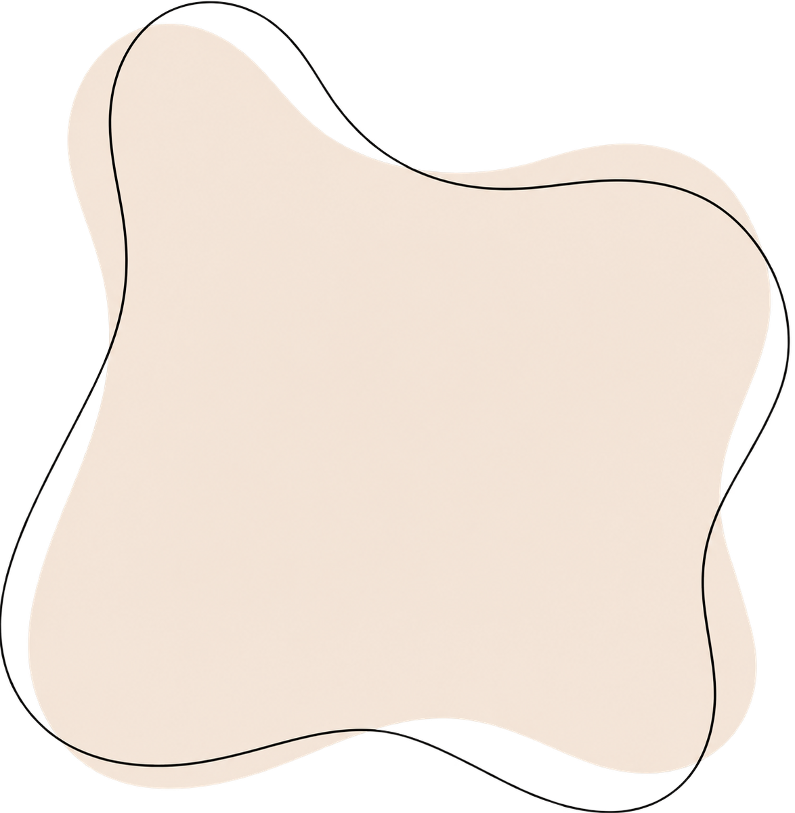
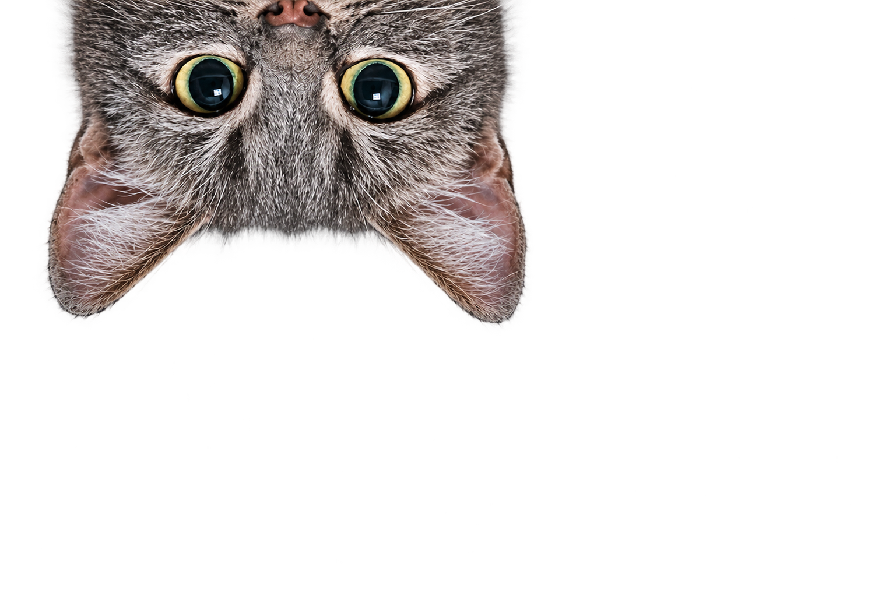
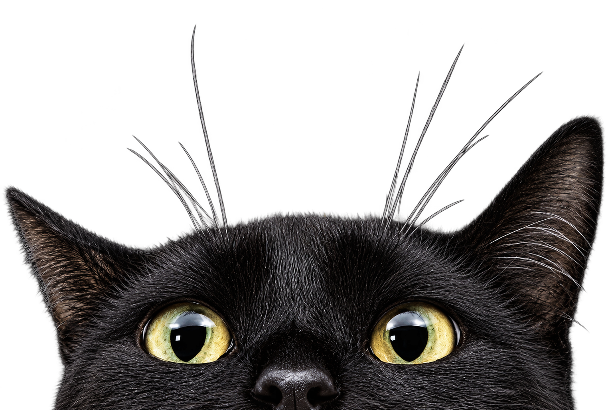
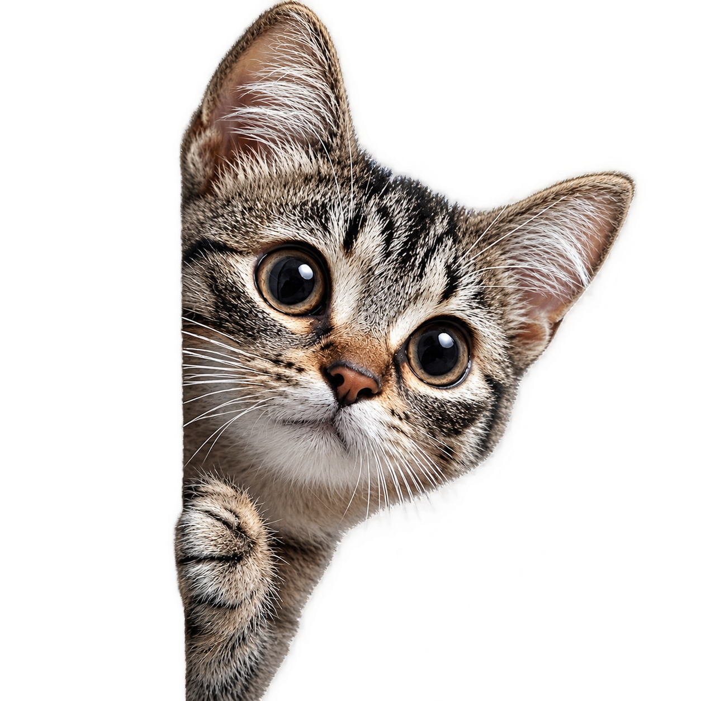
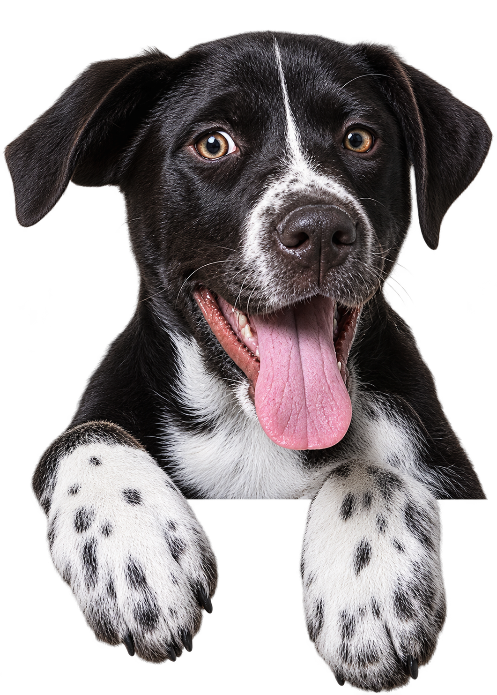
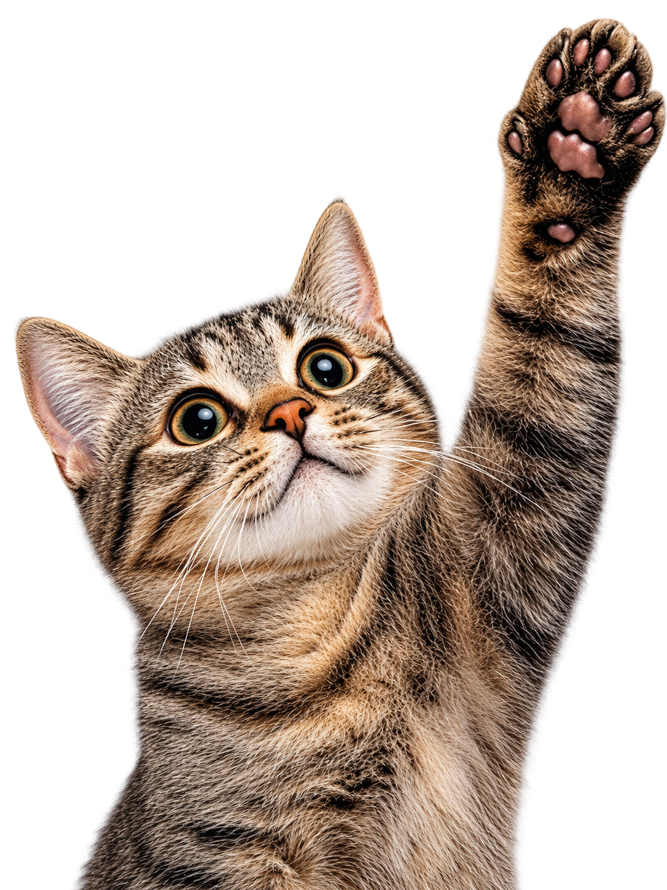
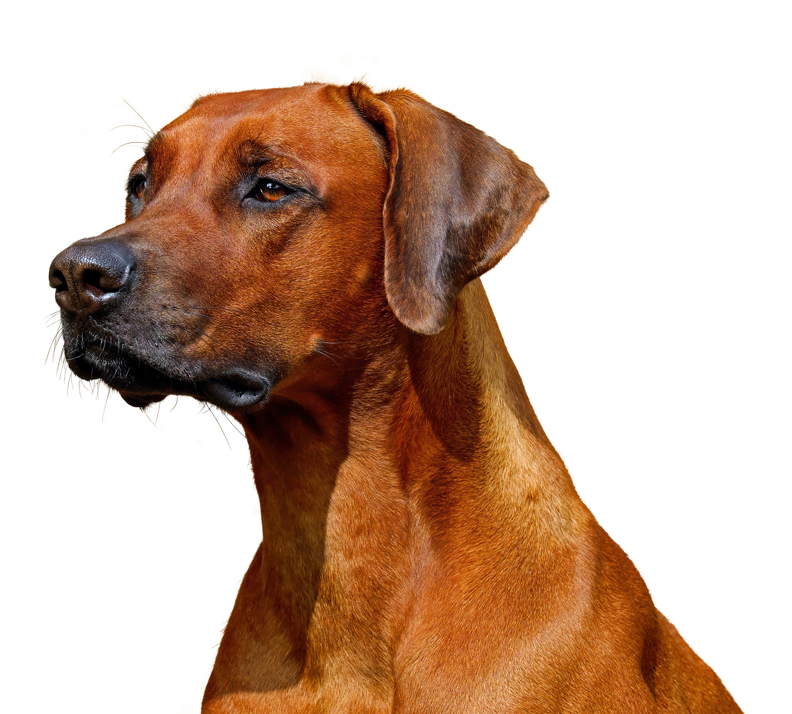
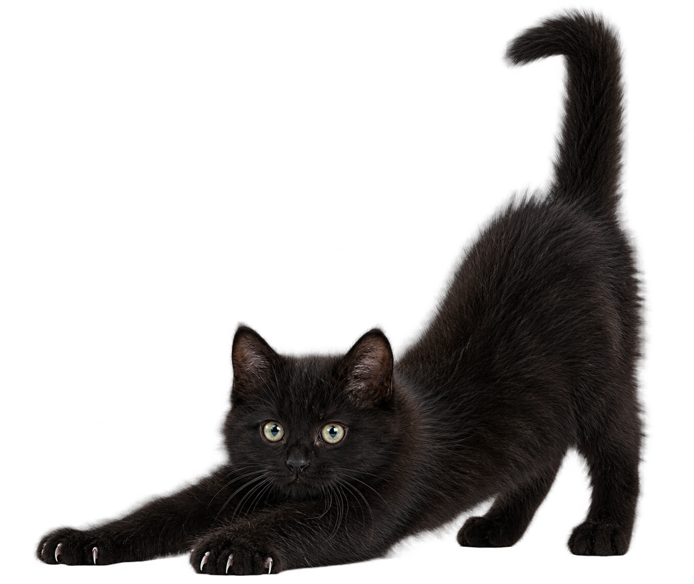

Cuidar
é um
ato de amor!
Cuide melhor do seu animal com
informações, orientação e ajuda.

Encontre tudo para cuidar do seu pet
Informações simples para ajudar você a cuidar, proteger e proporcionar mais bem-estar ao seu animal.



Cuidados
Dicas para cuidar melhor do seu pet e manter seu bem-estar.

Questionário
Conheça melhor as necessidades e características do seu pet.

Adoção
Encontre informações para ajudar um animal a encontrar um novo lar.